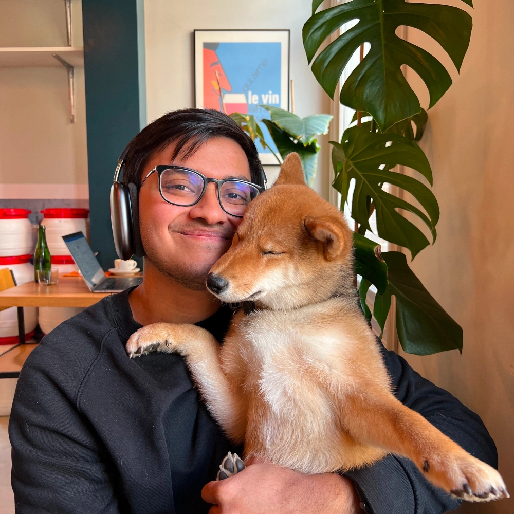

@amrith
A decade growing communities for startups.
Now building things younger me never could.
past lives
- Feathrd
- ·
- Product Hunt
- ·
- Opal
- ·
- Stoic
- ·
- Envision
- ·
- and others

past lives